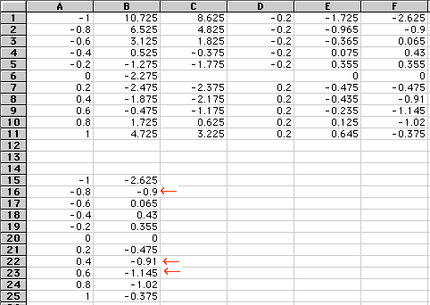
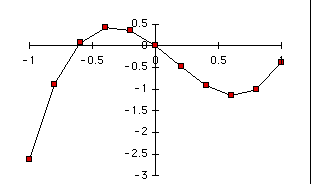

We construct the following spreadsheet:

Here we copy the given table of values for the function into cells A1 through B11. In column C we then compute the corresponding values. These values represent heights of the approximating rectangles for the integral. In column D we put in the widths () of the subintervals between adjacent x-values, with appropriate signs (negative for intervals to the left of the starting point x=0 for the integral). These represent widths of the approximating rectangles. In column E we compute the products of the values in columns C and D. This gives the areas of the approximating rectangles. In column F we take appropriate sums of the values in column E. This gives the values of the function
For the sake of convenience we copy the x-values in cells A1 to A11 and the F(x)-values in cells F1 to F11 into cells A15 through B26.
The spreadsheet formulas used to do these computations are shown here. (You should use the "Fill Down" command in your spreadsheet to save yourself from a lot of typing.)
You then answer the above questions by typing the appropriate
F(x) values (marked by red arrows) into the answer boxes.
Finally to get the graph of y=F(x), highlight cells A15 through
B26 by dragging your mouse and click on the chart tool in your
spreadsheet, obtaining:

which you then compare with the given choices. (Further details
about using the spreadsheet chart tool can be found in the
instructions for Project 1.)
{kind=link}